Gambar dari remote,
ke mana pun misi perlu terbang.
Tinggalkan laptop di rumah atau kantor. Rancang misi fotogrametri grid, koridor jalan, atau orbit helix 3D langsung di layar DJI RC 2, RC Pro, RC Pro 2, dan remote seri RC-N (Smartphone & Tablet). Injeksi instan ke DJI Fly tanpa kabel data, tanpa microSD, dan tanpa jeda.

Jajaran Produk
Pilih lisensi yang dirancang sesuai skala survei Anda. Kini tersedia dalam dua paket lisensi: Paket HOBBY untuk pemetaan mandiri esensial, dan Paket PRO untuk surveyor profesional dengan fitur tanpa batas.
- Lisensi Fleksibel: Tersedia pilihan lisensi beli putus maupun skema langganan yang fleksibel sesuai kebutuhan Anda.
- Hak Migrasi Mandiri: Bebas pindah lisensi sendiri secara instan jika ganti atau upgrade remote kontrol.
- Pembaruan Gratis: Dapatkan pembaruan firmware dan kalibrasi tipe drone baru tanpa biaya tambahan.
Solusi mandiri lengkap untuk pemetaan foto udara grid, koridor jalan, dan orbit inspeksi di smart remote tanpa membawa laptop ke lapangan.
- Semua Fitur Pemetaan: Misi foto udara grid otomatis, koridor linear jalan & sungai, orbit helix 3D continuous spiral, elevation profile 2D DEM, breakpoint resume, dan RTH altitude advisor.
- Laporan Misi Lengkap: Ringkasan data penerbangan, kalkulasi GSD instan, statistik luasan area, dan estimasi konsumsi foto udara siap cetak.
- Injeksi Berkas Standar: Timpa berkas dummy di direktori smart remote secara langsung tanpa laptop atau kabel data.
- Flash Inject Instan: Kirim misi langsung ke DJI Fly dalam waktu kurang dari 1 detik (membutuhkan TW Tweaks).
- Local Link (Direct Sync): Transfer rute terbang nirkabel langsung dari laptop atau HP ke remote tanpa kuota internet.
- Split Misi: Pembagian 1 misi hingga 5 bagian eksekusi untuk manajemen rotasi baterai yang teratur dan aman.
Mencakup seluruh fitur Paket Hobby, ditambah Follow Terrain DEM otonom, Split Misi unlimited, Fleet Sync, TW Tweaks / DJI Fly Mod, dan Drone Tools lengkap.
- Mencakup Seluruh Fitur Paket Hobby: Semua fitur pemetaan, laporan misi, injeksi berkas standar, flash inject <1s, dan local link direct sync.
- Follow Terrain DEM Otonom: Ketinggian drone otomatis mengikuti kontur bukit dan lembah secara dinamis berbasis DEM Data Elevasi DEM, menjaga resolusi GSD tetap konstan di lereng curam.
- Split Misi Unlimited: Pembagian misi tanpa batas bagian eksekusi untuk survei ratusan hingga ribuan hektar perkebunan & pertambangan dengan banyak baterai.
- TW Tweaks / DJI Fly Mod: Mendukung fitur modifikasi dan fitur tambahan pada aplikasi DJI Fly untuk performa maksimal.
- Fleet Sync Antar-Remote: Transfer rute terbang langsung antar-remote smart controller di lapangan tanpa laptop atau koneksi internet.
-
Drone Tools Lengkap:
• FCC Boost: Penguat sinyal transmisi radio untuk daya jangkau maksimal dan tembus rintangan / kanopi sawit.
• Altitude Unlock: Membuka batas ketinggian penerbangan hingga 500 meter untuk survei tebing curam & struktur tinggi.
• ATTI Mode: Kontrol penerbangan manual tanpa bantuan GPS untuk terbang di bawah kanopi lebat atau area gangguan magnetik.
Perbedaan Lisensi: Paket Hobby vs Paket Pro
Bandingkan detail kapabilitas teknis di bawah ini untuk menentukan paket yang paling tepat untuk kebutuhan operasional Anda.
| Fitur & Kapabilitas | 🚁 PAKET HOBBY | ⚡ PAKET PRO (Rekomendasi) |
|---|---|---|
| Fitur Pemetaan Dasar & Lanjutan Grid, Koridor Jalan, Orbit Helix 3D continuous spiral, Elevation Profile 2D DEM, Breakpoint Resume, RTH Advisor, Asymmetrical Corridor |
✅ Semua Fitur Pemetaan | ✅ Semua Fitur Pemetaan |
| Laporan Misi Fotogrametri Ringkasan statistik misi, estimasi foto, GSD, cakupan area survei |
✅ Laporan Misi | ✅ Laporan Misi |
| Injeksi Berkas Standar Timpa berkas dummy di storage smart remote secara langsung |
✅ Injeksi Berkas Standar | ✅ Injeksi Berkas Standar |
| Flash Inject Instan Kirim misi langsung ke DJI Fly dalam waktu < 1 detik (membutuhkan TW Tweaks) |
✅ Flash Inject Instan (<1s) | ✅ Flash Inject Instan (<1s) |
| Local Link (Direct Sync) Transfer misi nirkabel langsung dari laptop atau HP tanpa kuota internet |
✅ Local Link (Direct Sync) | ✅ Local Link (Direct Sync) |
| Split Misi (Multi-Battery Division) Pembagian 1 rute terbang besar menjadi beberapa bagian eksekusi |
Hingga 5 Bagian Eksekusi | ⚡ Unlimited (Tanpa Batas) |
| Follow Terrain DEM Otonom Ketinggian drone otomatis mengikuti kontur bukit dan lembah (Data Elevasi DEM) |
❌ Tidak Tersedia | ✅ Follow Terrain Otonom (GSD Konstan) |
| TW Tweaks / DJI Fly Mod Mendukung fitur modifikasi dan fitur tambahan pada aplikasi DJI Fly |
❌ Tidak Tersedia | ✅ Didukung Penuh |
| Fleet Sync Antar-Remote Transfer rute terbang langsung antar-remote tanpa internet atau laptop |
❌ Tidak Tersedia | ✅ Fleet Sync Antar-Remote |
| Drone Tools — FCC Boost Penguat sinyal transmisi radio untuk jangkauan sinyal maksimal & tembus rintangan |
❌ Tidak Tersedia | ✅ FCC Boost (Penguat Sinyal) |
| Drone Tools — Altitude Unlock Membuka batas ketinggian penerbangan hingga 500 meter untuk survei tebing curam |
❌ Tidak Tersedia | ✅ Altitude Unlock (Hingga 500 Meter) |
| Drone Tools — ATTI Mode Kontrol penerbangan manual tanpa bantuan GPS untuk terbang di bawah kanopi lebat |
❌ Tidak Tersedia | ✅ ATTI Mode (Manual Anti-Jamming) |
| Peta Offline (MBTiles) Bekerja di blank spot tanpa sinyal internet seluler |
✅ Peta Offline | ✅ Peta Offline |
| Masa Aktif Lisensi | ✅ Opsi Beli & Langganan | ✅ Opsi Beli & Langganan |
| Hak Migrasi Mandiri Antar-Remote | ✅ Mandiri via Google Account | ✅ Mandiri via Google Account |
| Dukungan & Pembaruan Fitur | ✅ Disediakan | ✅ Disediakan |
| Aksi Pemesanan | Pesan Paket Hobby | Pesan Paket Pro |
Cocok dengan Perangkat Anda
Tidak perlu membeli drone atau remote baru. TW-Mapper telah terintegrasi penuh dengan profil kalibrasi optik pabrik resmi masing-masing drone DJI consumer.

Ringan di bawah 249g. Profil optik terkalibrasi presisi dengan autofokus infinity untuk pemetaan lahan cepat & fleksibel.

Drone ringkas generasi mutakhir dengan sistem transmisi sinyal lebih kuat dan manajemen daya efisien untuk survei kebun.

Dukungan dual-kamera: 24mm Wide untuk ortofoto area luas dan 70mm Medium Tele untuk inspeksi fasad tebing dan menara.
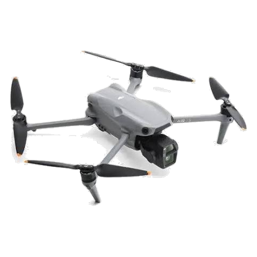
Sensor utama 1-inch yang superior di kondisi cahaya temaram pagi/sore, menghasilkan GSD tajam minim chromatic aberration.
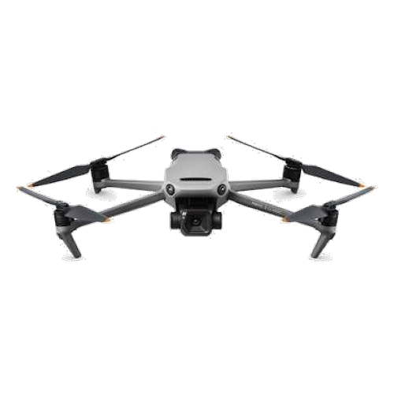
Sensor raksasa Micro Four Thirds dengan rentang dinamis 12.8 stops, standar emas fotogrametri drone kelas surveyor komersial.

Sistem tiga lensa optik serbaguna. Pemetaan ortofoto nadir dan inspeksi detail struktur telephoto dalam satu kali penerbangan.

Platform quadcopter mutakhir DJI untuk survei industri skala besar dengan transmisi sinyal ultra stabil menembus perbukitan.
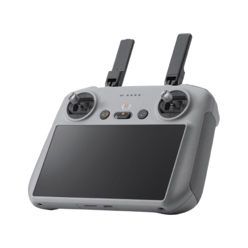
Remote bawaan Mini 4 Pro dan Air 3/3S. TW-Mapper terpasang langsung di sistem remote tanpa perlu smartphone tambahan.

Smart remote profesional ultra-terang di bawah terik matahari siang. Sangat responsif merender peta offline MBTiles ratusan MB.

Remote flagship generasi terbaru dengan layar lebar ultra jernih dan prosesor kencang untuk manajemen misi survei kompleks.

Gunakan remote penjepit bawaan drone Anda dengan HP atau Android Tablet. Kompatibel penuh dengan seluruh fitur TW-Mapper.
Kenapa Perlu TW-Mapper
Membandingkan alur survei tradisional berbasis laptop yang kaku dengan alur kerja mandiri TW-Mapper langsung di smart remote Anda.
| Parameter Alur Kerja | Alur Lama (Laptop & Web) | Dengan TW-Mapper Mobile |
|---|---|---|
| Perangkat di Lapangan | Harus membawa laptop, mouse, charger, dan tas besar ke kebun atau lokasi terpencil. | Cukup remote di tangan: Tidak perlu bawa laptop, hemat tenaga dan mobilitas lincah. |
| Perancangan Misi | Wajib dirancang di web browser PC sebelum berangkat ke lokasi survei. | Langsung di remote: Ketuk layar remote untuk gambar poligon area dalam hitungan detik. |
| Pergeseran Batas Lahan | Kaku: Jika batas lahan bergeser beberapa meter di lokasi, rute tidak bisa diedit tanpa laptop. | Edit instan di lokasi: Geser titik poligon dan generate ulang jalur seketika. |
| Transfer Berkas Misi | Ribet: Ekspor KMZ, colok kabel data USB atau bongkar pasang kartu microSD. | 1-Klik Injeksi: Otomatis tersalin ke folder Waypoint DJI Fly tanpa kabel. |
| Survei Ratusan Hektar | Harus membagi rute secara manual di software PC per perkiraan daya tahan baterai. | Multi-Battery Split Otomatis: Aplikasi memecah area luas menjadi misi rapi per baterai. |
| Ketahanan Sinyal Terhalang | Aplikasi pihak ketiga via SDK virtual-stick rentan gagal/hover jika sinyal terputus. | 100% Autopilot Native: Koordinat diunggah ke drone; sinyal putus misi tetap tuntas & RTH aman. |
| Kontur Lereng & Berbukit | Terbang ketinggian flat berisiko menabrak lereng bukit atau ukuran GSD tidak seragam. | Follow Terrain DEM Otonom: Drone naik-turun mengikuti kontur tanah otomatis. |
| Inspeksi Vertikal Menara | Pola orbit manual atau cincin bertingkat yang boros baterai dan menangkap noise langit. | Continuous Helix 3D: Pola spiral turun profesional, kamera menunduk anti-noise langit. |
Fitur Unggulan
Mengadopsi kapabilitas fotogrametri otonom kelas industri dan standar inspeksi struktur vertikal langsung ke dalam ekosistem drone Anda.

Dynamic Speed Clamping (Pencegah Foto Bolong)
Algoritma cerdas yang menghitung batas kecepatan maksimum aman secara real-time berdasarkan jeda buffer shutter kamera DJI. Otomatis menurunkan kecepatan terbang saat menggunakan overlap tinggi (frontlap 80–85%) atau format RAW DNG resolusi tinggi agar kamera tidak pernah melewatkan foto (*missed frames*).

Boustrophedon Grid & Longest-Edge Alignment
Pola jalur zig-zag optimal yang secara otomatis menyelaraskan orientasi rute sejajar dengan sisi poligon area terpanjang (*Longest-Edge Alignment*). Meminimalkan jumlah manuver belokan drone di udara, mengoptimalkan efisiensi baterai, dan mempercepat durasi penyelesaian misi survei.

Follow Terrain DEM Otonom
Drone otomatis terbang naik dan turun mengikuti lekuk permukaan bumi dengan ketinggian relatif di atas tanah (AGL) konstan berbasis data kontur elevasi DEM. Menjamin ukuran piksel Ground Sampling Distance (GSD) foto udara tetap seragam di lereng bukit curam tanpa risiko tabrakan tanah.

Flash Inject Instan (< 1 Detik)
Kirim rute misi pemetaan langsung ke DJI Fly dalam waktu kurang dari 1 detik (membutuhkan TW Tweaks). Tanpa perlu mencolokkan kabel data USB ke komputer, tanpa cabut-pasang kartu microSD, dan tanpa perlu me-restart aplikasi DJI Fly di remote controller Anda.

Local Link & Fleet Sync (Direct Sync)
Sinkronisasi rute terbang otonom secara nirkabel langsung di lapangan: Local Link mentransfer misi dari laptop atau smartphone ke remote tanpa kuota internet, sementara Fleet Sync (Paket Pro) mentransfer rute terbang langsung antar-remote smart controller tanpa laptop atau internet.

Split Misi Multi-Baterai
Solusi survei area luas puluhan hingga ribuan hektar. Sistem cerdas otomatis membagi 1 poligon area besar menjadi beberapa bagian eksekusi rute terbang teratur per kapasitas baterai drone (hingga 5 bagian eksekusi di Paket Hobby, dan Unlimited tanpa batas di Paket Pro).
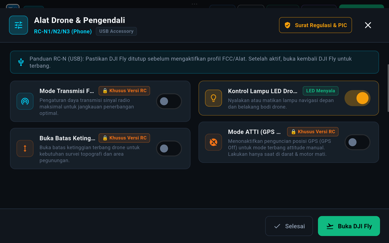
Drone Tools: FCC Boost, 500m & ATTI
Perangkat utilitas kelas profesional: FCC Boost memaksimalkan daya pancar sinyal radio transmisi remote untuk menembus kanopi sawit & jangkauan terjauh; Altitude Unlock membuka batas limit ketinggian hingga 500 meter; serta ATTI Mode kontrol manual tanpa GPS untuk terbang aman di area interferensi tinggi.
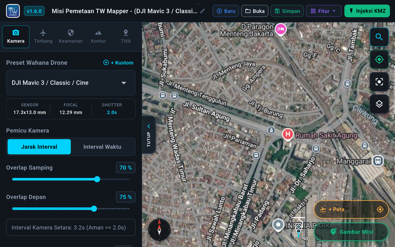
Elevation Profile 2D DEM & Real-time Clearance
Diagram penampang ketinggian tanah melintang di bawah rute terbang secara real-time. Menampilkan siluet kontur elevasi DEM, jalur drone, dan indikator clearance 3 warna (Aman >30m, Waspada 15-30m, Bahaya <15m) dengan kursor scrub dua arah untuk memantau keamanan kontur sebelum terbang.
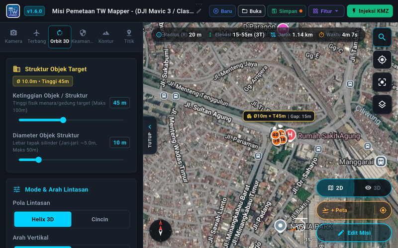
Orbit Helix 3D (Continuous Spiral)
Misi spiral kontinu ("pola per") tanpa jeda step naik-turun dengan pergerakan 3D konstan. Mengikuti SOP inspeksi profesional: Descending Spiral dari puncak menara BTS/pilar dengan pitch kamera menunduk -30° s/d -45° untuk eliminasi noise awan/langit dan rekonstruksi model 3D interlocking optimal.

Breakpoint Resume & RTH Advisor
Ketika drone harus mendarat mendadak akibat baterai menipis, TW-Mapper otomatis mencatat waypoint terputus dan menghasilkan misi lanjutan instan tanpa mengulang dari nol. Disertai RTH Altitude Advisor otomatis berbasis data elevasi DEM untuk kepulangan drone yang aman melompati puncak bukit tertinggi.
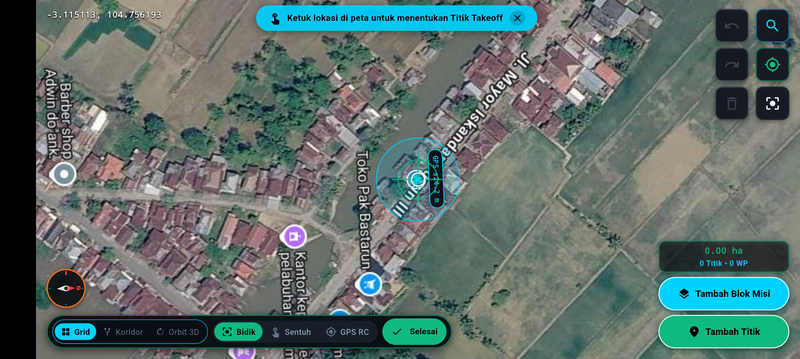
Multi-Area Project Mapping (Multi-Poligon)
Kemampuan merancang dan mengelola beberapa poligon area pemetaan sekaligus dalam satu proyek survei. Setiap poligon area dapat memiliki parameter ketinggian, GSD, dan arah sapuan independen dengan HUD panel navigasi cepat tanpa perlu membuat proyek terpisah.
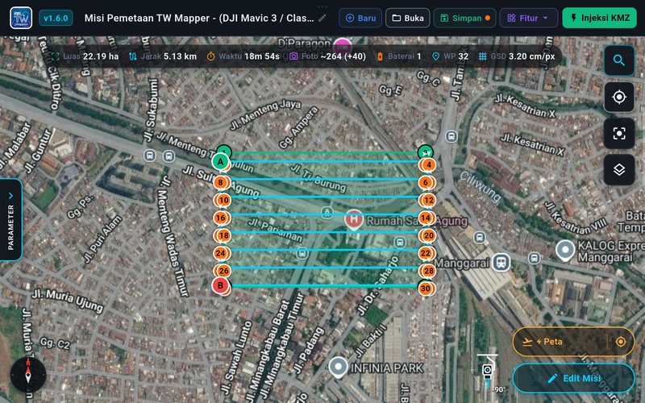
Double Grid (Mode 3D Facade & Topografi)
Pola jalur terbang silang ortogonal 90° (*cross-grid*) otomatis untuk pemodelan 3D mesh bangunan, struktur fasad vertikal, dan area perbukitan kompleks. Menghasilkan kerapatan sudut foto dari dua sumbu tegak lurus untuk rekonstruksi fotogrametri yang presisi.
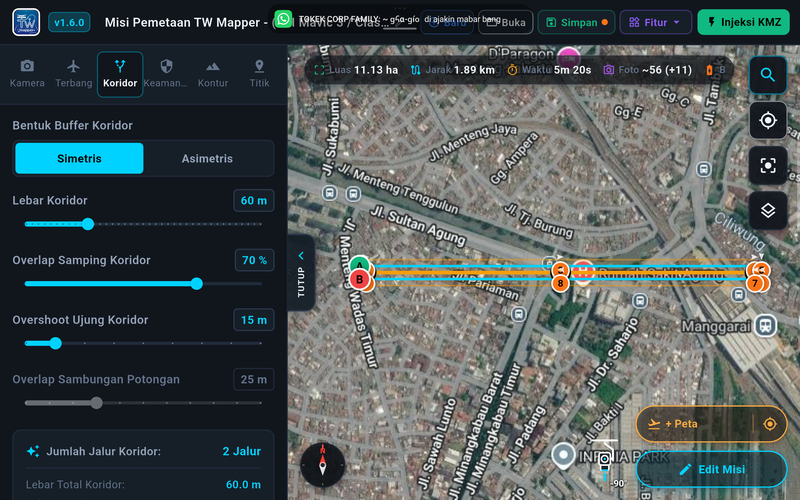
Asymmetrical Corridor Buffer & Injeksi Standar
Pengaturan lebar sayap koridor yang independen antara sisi kiri (*left width*) dan sisi kanan (*right width*) untuk efisiensi survei jalan di tepi tebing curam, bibir pantai, atau batas konsesi. Mendukung metode injeksi berkas standar dengan menimpa berkas dummy di direktori smart remote.
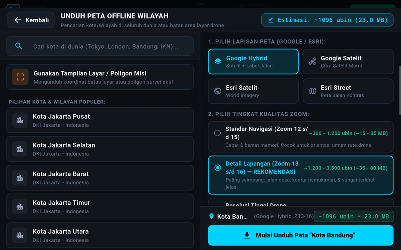
Unduh Peta Offline Per Kabupaten/Kota & MBTiles
Fitur praktis pengunduhan peta satelit resolusi tinggi langsung berbasis daftar kabupaten/kota di seluruh Indonesia (Sabang sampai Merauke). Mendukung format raster peta offline MBTiles untuk memastikan survei tetap lancar di area pedalaman pelosok tanpa sinyal internet.

Local DEM Upload Server (Server Elevasi Mandiri)
Web server lokal mandiri yang terpasang di remote controller. Memungkinkan pilot mengunggah berkas data elevasi DEM kustom beresolusi tinggi langsung dari laptop atau smartphone secara nirkabel melalui jaringan Wi-Fi lokal tanpa koneksi internet luar.
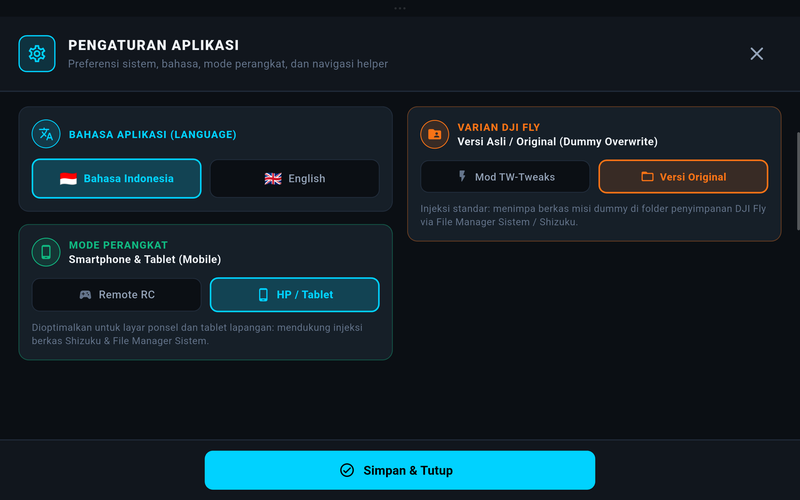
Quick Floating Navigator & Photo POI
Menu tombol mengambang terintegrasi pada status bar remote controller untuk berpindah instan satu sentuhan antara TW-Mapper, DJI Fly, dan File Manager tanpa kendala tombol navigasi. Dilengkapi fitur Photo POI untuk menyematkan titik bidik foto inspeksi khusus di sepanjang jalur terbang.
Kalkulator Estimasi GSD & Fotogrametri
Masukkan ketinggian terbang untuk mengestimasi Ground Sampling Distance (GSD), luasan cakupan per foto, dan kecepatan jelajah yang direkomendasikan.
Dari Kotak ke Udara
Hanya 5 langkah cepat dari remote menyala hingga drone terbang menyelesaikan misi pemetaan otonom di lokasi survei.
-
Nyalakan Remote & Buka TW-Mapper
Nyalakan remote Anda di lapangan (DJI RC 2, RC Pro, RC Pro 2, atau RC-N dengan smartphone/tablet). Buka aplikasi TW-Mapper langsung dari layar remote controller tanpa memerlukan koneksi internet sama sekali.
-
Tentukan Area atau Objek Survei
Ketuk layar remote untuk menggambar poligon batas area lahan, rute koridor jalan/sungai, atau pilih mode Orbit Helix 3D untuk menara BTS. Anda juga dapat mengimpor file KML/KMZ batas lahan dari klien.
-
Pilih Parameter & Sudut Optik
Pilih model drone Anda (profil kalibrasi optik otomatis terisi). Tentukan ketinggian terbang, persentase overlap (standar 75% front / 70% side), dan sudut gimbal (-90° Nadir, -60° Oblique, atau -45° Fasad).
-
Tekan Tombol "Inject to DJI Fly"
Satu ketukan tombol menyalin berkas misi berformat standar DJI Waypoint ML (WPML / KMZ) langsung ke direktori internal DJI Fly dalam 1 detik.
-
Buka DJI Fly & Jalankan Misi
Buka DJI Fly, masuk ke menu Waypoint, pilih rute yang baru tersimpan, lalu geser slider untuk lepas landas. Drone terbang mandiri, mengambil foto presisi, dan kembali mendarat aman di titik Home.
Unduhan & Panduan
Akses berkas instalasi resmi, modul TW Tweaks (DJI Fly Mod), video panduan instalasi, dan dokumentasi teknis lengkap.
- Berkas Resmi Google Drive: Unduh APK versi terbaru secara aman dan terverifikasi.
- Video Tutorial: Panduan instalasi dan setup di remote controller langkah demi langkah.
- Dokumentasi Lengkap: Panduan fitur, format rute WPML, dan rujukan SOP survei lapangan.
TW-Mapper Mobile APK
Paket instalasi aplikasi TW-Mapper Mobile versi publik terbaru untuk smart remote (DJI RC 2, RC Pro, RC Pro 2) dan remote seri RC-N (Smartphone & Tablet Android).
Unduh TW-Mapper (Drive)TW Tweaks (DJI Fly Mod)
Modul tambahan DJI Fly Mod untuk membuka fitur Flash Inject < 1 detik, penguat sinyal transmisi FCC Boost, dan pembuka limit ketinggian 500m.
Unduh TW Tweaks (Drive)Video Cara Install TW-Mapper
Panduan video lengkap yang memperlihatkan alur instalasi, penyetelan izin, dan penyiapan TW-Mapper langsung pada remote controller DJI.
Tonton di YouTube ↗Dokumentasi Resmi
Dokumentasi teknis lengkap mencakup arsitektur sistem, spesifikasi format WPML, panduan DEM Data Elevasi DEM, dan rujukan operasional lapangan.
Buka Dokumentasi ↗Untuk melakukan sinkronisasi misi langsung tanpa file dummy dalam waktu kurang dari 1 detik, Anda harus menggunakan kombinasi TW Mapper dan DJI Fly Mod (TW Tweaks).
Setelah Membeli
Investasi yang aman, transparan, dan terlindungi untuk kelancaran operasional bisnis survei jangka panjang.
Pilihan Lisensi Fleksibel & Transparan
Tersedia pilihan skema lisensi yang fleksibel—baik opsi beli putus maupun sistem langganan berkala—yang dapat disesuaikan dengan skala kebutuhan dan anggaran operasional survei Anda.
Hak Migrasi Mandiri Fleksibel
Jika remote controller Anda rusak, hilang, atau Anda ingin meng-upgrade ke seri remote terbaru, Anda dapat memindahkan lisensi sendiri secara instan via Google Account tanpa perlu membeli lisensi baru.
Standar Operasional Lapangan Profesional
Dirancang dan diuji langsung bersama para instruktur dan pilot profesional berpengalaman pada skenario nyata: menara BTS, jembatan, perkebunan kelapa sawit, dan area tambang berbukit.
Kolaborasi Pengembang
Dibangun dan didukung penuh oleh kolaborasi pengembang dan praktisi teknologi drone: WanDrone dan Throttle Warriors. Tim teknis dan komunitas diskusi aktif selalu siap mendampingi operasional Anda.
Keamanan & Batasan
Informasi teknis transparan mengenai protokol keselamatan penerbangan otonom dan alur pemrosesan data pasca-terbang.
Keamanan Sistem Bawaan DJI
Sensor anti-tabrak (Obstacle Avoidance) dan sistem fail-safe Return-to-Home (RTH) bawaan DJI tetap aktif penuh 100%. Misi dijalankan langsung oleh autopilot firmware drone tanpa jeda atau risiko latensi virtual stick pihak ketiga.
Batasan Operasional Faktual
Aplikasi ini berfokus pada perencanaan misi & akuisisi foto udara presisi di lapangan. Penggabungan orthomosaic / 3D point cloud tetap diproses di workstation menggunakan software fotogrametri seperti Agisoft Metashape, Pix4D, DJI Terra, atau WebODM.
Drone consumer DJI menggunakan chip GNSS frekuensi L1. Untuk menghasilkan peta dengan akurasi sub-sentimeter setara drone enterprise RTK seharga ratusan juta rupiah, padukan survei dengan Ground Control Point (GCP) di lapangan. TW-Mapper menjamin geotag foto rapi dengan sudut kamera konsisten untuk rekonstruksi fotogrametri optimal.
Siap begitu remote Anda menyala.
Silakan menghubungi kontak resmi kami di bawah ini sesuai kebutuhan Anda, baik untuk pemesanan lisensi, aktivasi, maupun konsultasi fitur dan teknis operasional.